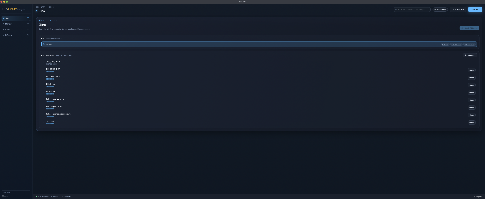

// Workflow tools for post production
Products for the edit room.
Practical Avid tools for cutting, comparing, and moving work between applications.
// Products / 04
Choose a workflow
01
Editorial + VFX workflow
Elemental Bender.
A growing suite of tools in one extension—cutting out repetitive work so you can focus on what matters most.
View product
02
Source + record comparison
Difference Engine.
Compare sequences visually and via data so moved, missing, or changed elements do not slip through.
View product
03
Avid + After Effects workflow
AE Bridge.
Round-trip plates between Avid and After Effects without losing the context of the edit.
View product
04
Avid bin workflow
BinCraft.
Inspect bins, batch-edit metadata, and report effects without changing the originals.
View product